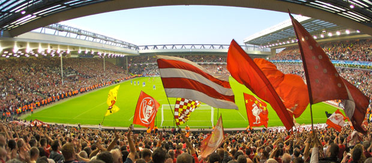

Home
Anfield
Legendary Players
Current Manager
Anfield is the home stadium of Liverpool FC

Photo from the Kop, the section for the most passionate supporters
Built in 1884
Seats 54,074
6th largest stadium in England